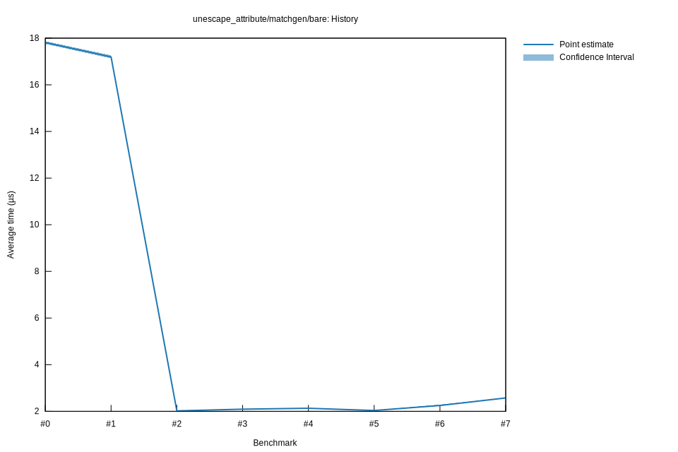

# 62025-10-31T17:57:09-07:00
|
Lower Bound |
Estimate |
Upper Bound |
| Value: |
2.23µs |
2.25µs |
2.29µs |
| Throughput: |
7233.63MiB/s |
7159.18MiB/s |
7035.70MiB/s |
| Change in Value: |
+8.7945% |
+9.9784% |
+11.463% |
| Change in Throughput: |
-8.0836% |
-9.0731% |
-10.284% |
No change in performance detected.
# 52025-10-31T17:50:32-07:00
|
Lower Bound |
Estimate |
Upper Bound |
| Value: |
2.02µs |
2.04µs |
2.05µs |
| Throughput: |
7960.50MiB/s |
7917.16MiB/s |
7863.48MiB/s |
| Change in Value: |
-5.7299% |
-4.5039% |
-3.5629% |
| Change in Throughput: |
+6.0782% |
+4.7163% |
+3.6946% |
No change in performance detected.
# 42025-10-29T22:29:22-07:00
|
Lower Bound |
Estimate |
Upper Bound |
| Value: |
2.12µs |
2.13µs |
2.14µs |
| Throughput: |
7583.67MiB/s |
7560.33MiB/s |
7536.54MiB/s |
| Change in Value: |
+0.5393% |
+1.5431% |
+2.9401% |
| Change in Throughput: |
-0.5364% |
-1.5196% |
-2.8561% |
No change in performance detected.
# 32025-10-29T22:22:48-07:00
|
Lower Bound |
Estimate |
Upper Bound |
| Value: |
2.09µs |
2.09µs |
2.10µs |
| Throughput: |
7726.58MiB/s |
7701.49MiB/s |
7674.22MiB/s |
| Change in Value: |
+3.2222% |
+4.0389% |
+4.8389% |
| Change in Throughput: |
-3.1217% |
-3.8821% |
-4.6156% |
No change in performance detected.
# 22025-10-29T19:47:11-07:00
|
Lower Bound |
Estimate |
Upper Bound |
| Value: |
2.01µs |
2.02µs |
2.03µs |
| Throughput: |
8016.31MiB/s |
7982.98MiB/s |
7948.83MiB/s |
| Change in Value: |
-88.404% |
-88.281% |
-88.164% |
| Change in Throughput: |
+762.38% |
+753.30% |
+744.91% |
No change in performance detected.
# 12025-10-29T19:03:59-07:00
|
Lower Bound |
Estimate |
Upper Bound |
| Value: |
17.13µs |
17.19µs |
17.26µs |
| Throughput: |
940.49MiB/s |
937.10MiB/s |
933.32MiB/s |
| Change in Value: |
-4.4860% |
-3.1291% |
-1.8399% |
| Change in Throughput: |
+4.6967% |
+3.2302% |
+1.8744% |
No change in performance detected.
# 02025-10-26T16:48:14-07:00
|
Lower Bound |
Estimate |
Upper Bound |
| Value: |
17.75µs |
17.81µs |
17.87µs |
| Throughput: |
907.74MiB/s |
904.71MiB/s |
901.58MiB/s |